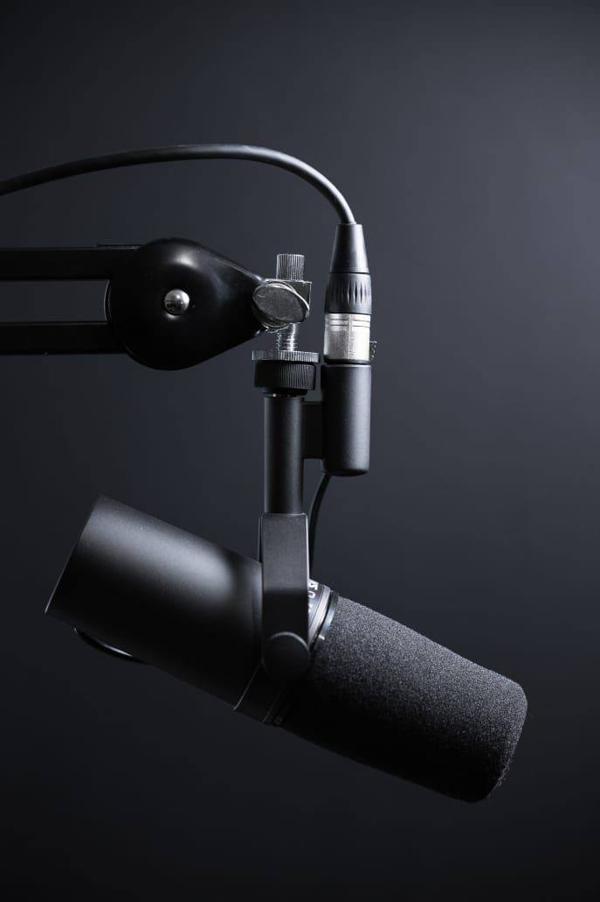
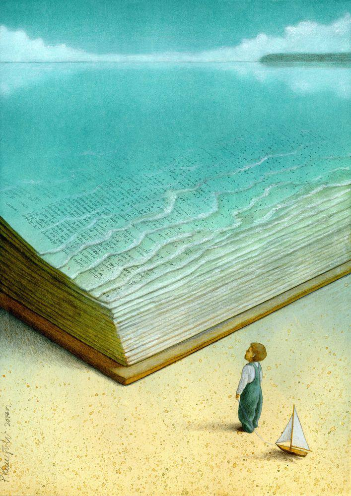

<div id="ajax-page" class="ajax-page-content">
    <div class="ajax-page-wrapper">
        <div class="ajax-page-nav">
            <!-- <div class="nav-item ajax-page-prev-next">
            </div> -->
            <div class="nav-item ajax-page-close-button">
                <a id="ajax-page-close-button" href="#"><i class="lnr lnr-cross"></i></a>
            </div>
        </div>

        <div class="ajax-page-title">
            <h1 style="float:right">مفهوم القراءة</h1>
        </div>

        <div class="row life">
            <center>
                <div class="col-sm-8 col-md-8 portfolio-block">
                    <div class="owl-carousel portfolio-page-carousel">
                        <div style="display: flex;justify-content: space-between;" class="item">
                            
                            
                        </div>
                    </div>

                    <!-- <div class="portfolio-page-video embed-responsive embed-responsive-16by9">
                    <iframe class="embed-responsive-item" src="https://www.youtube.com/embed/0pjhD5ySdPs"></iframe>
                </div> -->
                    <script type="text/javascript">
                        jQuery(document).ready(function ($) {
                            $('.portfolio-page-carousel').imagesLoaded(function () {
                                $('.portfolio-page-carousel').owlCarousel({
                                    smartSpeed: 1200,
                                    items: 1,
                                    loop: true,
                                    dots: true,
                                    nav: true,
                                    navText: false,
                                    margin: 10,
                                    autoHeight: true
                                });
                            });
                        });
                    </script>
                </div>
            </center>

            <div class="col-sm-12 col-md-12 portfolio-block conten">
                <!-- Project Description -->
                <div class="project-description">
                    <div class="block-title" style="float: right;">
                        <h3> </h3>
                    </div>
                    <!-- <ul class="project-general-info">
                        <li>
                            <p><i class="fa fa-user"></i>mahmoud yousef</p>
                        </li>
                    </ul> -->

                    <center class="txt">
                        <span>
                            هل القراءة محصورة فقط فى الكتب؟
                            ما الهدف من قراءة الكتب ؟
                            <br><br>
                            يعنى إيه قراءة الكمبيوتر للملفات؟
                            وقراءة الذكاء الإصطناعى للمعلومات التى تعطيها له؟
                            <br><br>
                            تخيل لو رأيت شخص أمامك ماسك كتاب ويصوب نظره تجاه كلماته وفى النهاية وجدت أنه لم يستوعب منه
                            شيئاً حينما سألته عن محتواه؟
                            هل هو قرأه ؟ أم حاول إستخدام أدواته زى النظر واليد ولكنه فشل فى قراءته؟
                            <br><br>
                            أنواع الكتب كثيرة
                            <br>
                             كتب علمية تحتوى على أبحاث ونظريات فى كل مجال من مجالات الحياة وقد يُكتَب كتاب واحد بواسطة-
                             <br>
                             عدد من الأشخاص
                            <br>
                             كتب علمية يكتبها شخص واحد محاولاً تبسيط المعلومة المتفق عليها علمياً بطريقته الخاصه-
                            <br>
                             كتب عبارة عن وجهات نظر كُتَّاب عن سمات معينة فى الحياة -
                            <br>
                             وغيرهم-
                            
                            <br><br>
                            فالكتاب هو مجموعة من المعلومات
                            والهدف من إقتناء الكتاب
                            هو القراءة لاستيعاب هذه المعلومات بالقدر المستطاع
                            فلو لم تستوعب فأنت لم تقرأ
                            أنت فقط حاولت القراءة ولم تستطع
                            <br><br>
                            الكمبيوتر لما بيقرأ الملفات
                            بيتعامل معها لإخراج النتيجة فى شاشة العرض
                            فلو لم يستطع قراءتها لن يحدث شيئاً
                            وكأن شيئاً لم يكن
                            وبيبقى محتاج تعديل بعض الأشياء
                            أو إضافة تعريفات و تزويده بالداتا
                            حتى يستطيع القراءة وفهم الملفات
                            <br><br>
                             حالياً بيستطيع القراءة السريعة  AI Chat ال
                             <br>
                            وتنفيذ المعلومات بشكل قوى للغاية
                            لأنه مزود بالمعلومات (متطور)
                            <br><br>
                            القراءة هى قراءة العقل للمعلومة وليست مجرد تحريك اللسان لإصدار أصوات الكلمات أو فقط النظر
                            بالعين على الكلمات
                            <br><br>
                            القراءة ليست محصورة فى الكتب
                            قد تقرأ من خلال ڤيديو أونلاين
                            أو بودكاست مسموع
                            أو من خلال المواقف الحياتية
                            <br><br>
                            المعلومات متوفرة فى كل مكان ، فقط يجب أن تكون قارئاً
                            أن تُعمل عقلك لإستخراج وإستيعاب المعلومات باستمرار
                            حتى يزداد قدر القراءة الخاصة بك
                            <br><br>
                            القراءة = الفهم
                            من أجل العمل بما تراه مناسباً لك
                            وبالتأكيد ستختلف مع بعض المعلومات
                            ولكن مهم إختلافك يكون بأسباب منطقية
                            وليس بالأهواء الشخصية المبنية على اللا علم
                        </span>
                    </center>
                    <span
                        style="font-family: 'Shadows Into Light', cursive; float: right; border-bottom: 0.5px solid white;">Muhammad
                        B. Salama</span>
                    <br>
                </div>
                <!-- Project Description -->
            </div>
        </div>
    </div>
</div>